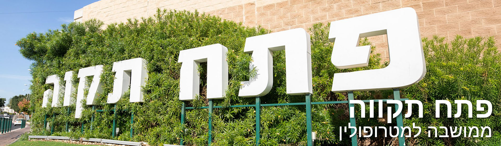

פתח תקווה - אם המושבות |
|
|
 |
קצת על המקום:פתח תקווה הוקמה בשנת 1878 והיא נחשבת למושבה הראשונה בארץ ישראל בעת החדשה. כיום היא עיר תוססת המשלבת היסטוריה מפוארת עם מרכזי הייטק מתקדמים. המקום מציע פארקים ירוקים, מוזיאונים ייחודיים וחיי קהילה עשירים, ומהווה צומת דרכים מרכזי בלב גוש דן. |
| חזרה לדף הבית | |